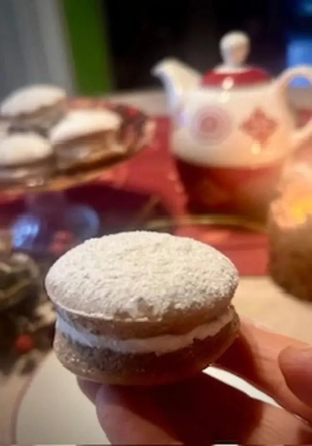

Confettura di pere ai fiori di lavanda
Una confettura raffinata che unisce la dolcezza delle pere ai fiori di lavanda essiccati, ispirata ai campi di lavanda della Provenza.

Oggi ho voluto preparare i whoopies: dei golosi dolcetti che arrivano da oltre oceano: sono composti da due morbide tortine rotonde al gusto cacao unite da una delicata crema marshmallows a base di albumi, zucchero e vaniglia. Secondo la tradizione, la ricetta è legata alla cultura Amish della Pennsylvania. Le madri preparavano questi dolci usando gli avanzi dell'impasto delle torte per i cestini del pranzo di mariti e figli e che questi esclamassero con gioia “whoopie!” nel vederli
Ricetta di Egi, pubblicata originariamente sul suo profilo Al.ta Cucina ↗.
Mescola il latte con l’aceto di mele e lascia riposare per qualche minuto.
A parte miscela le farine con il lievito e le spezie.
In una ciotola monta il burro vegetale con lo zucchero fino a ottenere un composto spumoso.
Unisci a filo il latte e poi le polveri, mescolando bene con una frusta.
Versa un cucchiaio di impasto negli stampi per muffin.
Cuoci in forno ventilato a 180° per massimo 15 minuti
Per la crema, una volta montata la panna, unisci lo spalmabile e lo sciroppo d’agave.
Farcisci i whoopies con la crema e sovrapponili a due a due.
Completa con una spolverata di zucchero a velo.
L'impasto al cacao trae in inganno. Se i dolci restano troppo in forno possono diventare duri. Il trucco: toglili non appena la superficie diventa opaca e gonfia ma leggermente morbida al tatto.
Una confettura raffinata che unisce la dolcezza delle pere ai fiori di lavanda essiccati, ispirata ai campi di lavanda della Provenza.
Pere cotte in uno sciroppo di karkadè e spezie: la versione analcolica e dal colore intenso delle classiche pere cotte al vino.
Pere cotte lentamente nel vino rosso speziato con cannella, anice stellato e chiodi di garofano: un dolce al cucchiaio per la stagione fredda.